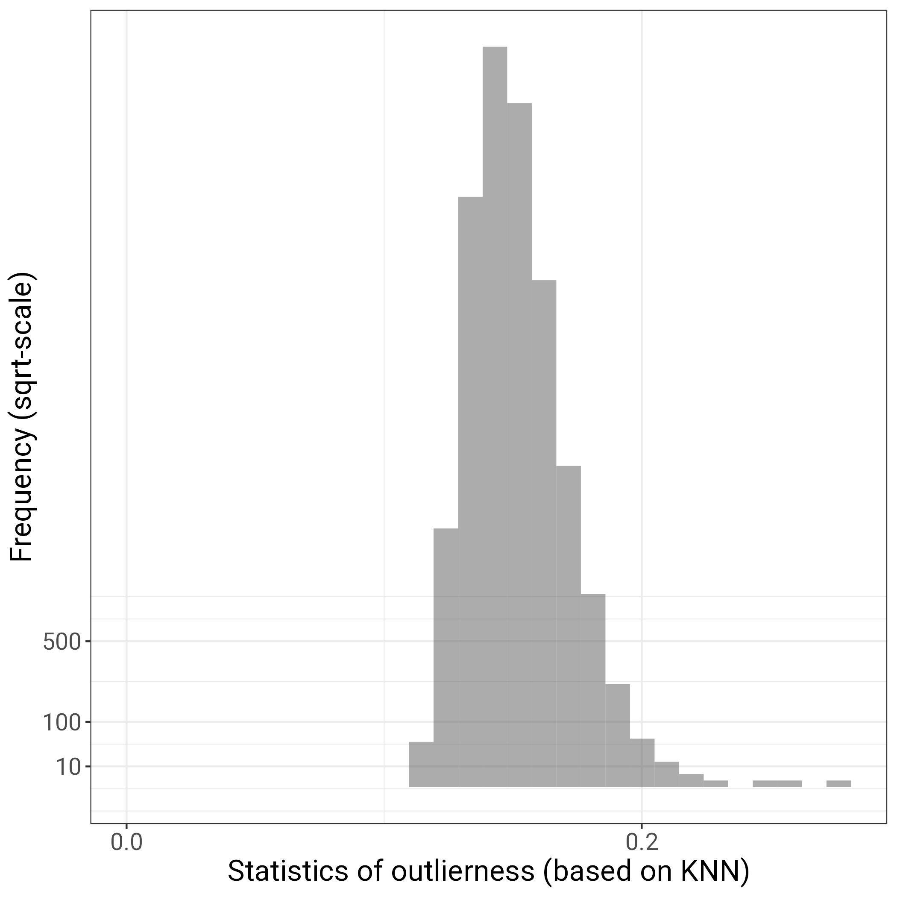
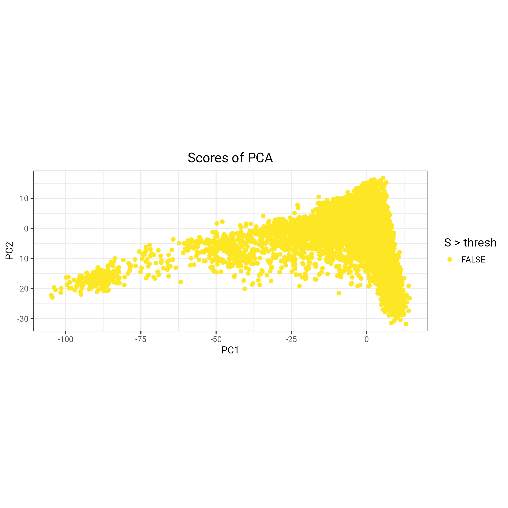
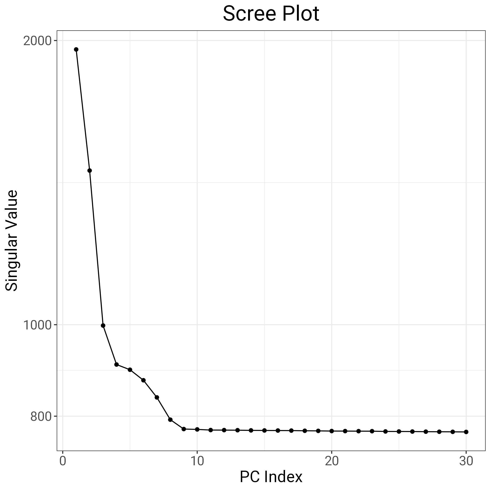
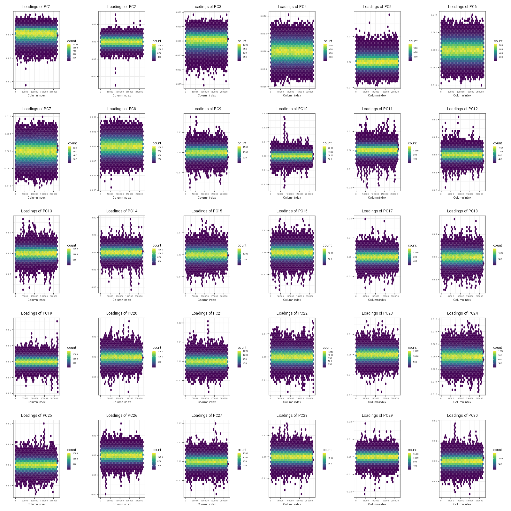
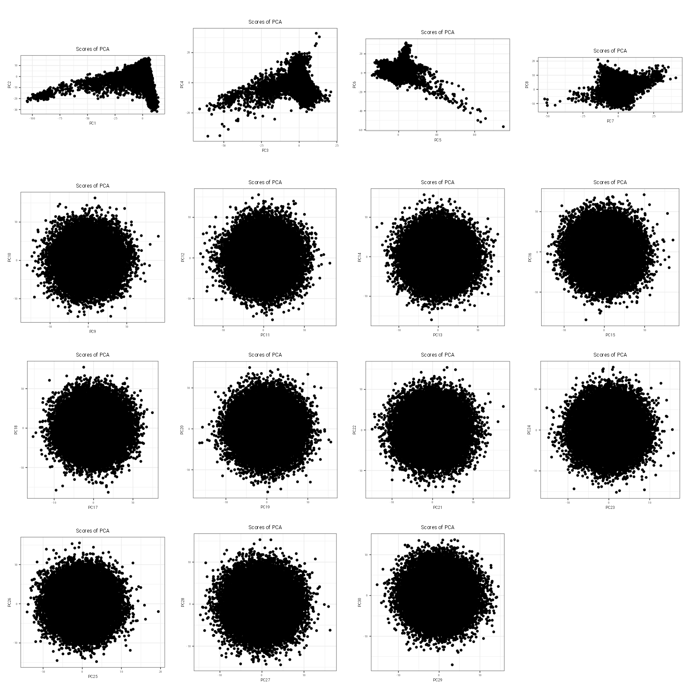

Upon completion of our study, it was brought to our attention by a colleague that we may be over-correcting our GWAS by including 40 genetic PCs as covariates. We had decided to include the 40 genetic PCs because they are provided by UKB and have routinely included been included in previous neuroimaging genetic GWAS using the UK Biobank data.
Here, we are relying on a toolkit by Prive et al. 2020 to better understand the structure of genetic PCs in our 43k neuroimaging subsample. The results presented below were used to decide that we will repeat our GWAS analysis by controlling for 8 genetic PCs.
library(bigsnpr)library(ggplot2)# load bed filebedfile <-"ukb_neuroimaging_brainAtrophy_GWASinput.bed"obj.bed <-bed(bedfile)# this data was previously cleaned and should not contain any related individuals, so this next step will include all pparticipants in the bed fileind.norel <-rows_along(obj.bed)# then calculate PCA with specialised functionobj.svd <-bed_autoSVD(obj.bed, ind.row = ind.norel, k =30,ncores =50,max.iter =10)# original code uses nb_cores() to determine number of cores used, but this was too many for running on gallowglass1 - manually changed to 50# look for outliers # using k-nearest neighbors algorithm, this detects outliers that are far from all other points (and is even more outlier if its nearest neighbors are in a very dense cluster)prob <- bigutilsr::prob_dist(obj.svd$u, ncores =50)S <- prob$dist.self /sqrt(prob$dist.nn)# S should be a vector with as many entries as participants str(S)# plot outlier statistic as histogram to see if there are outliersfileName ="hist_outlier_detection.png"p =ggplot()+geom_histogram(aes(S), alpha =0.5)+scale_x_continuous(breaks =0:5/5, limits =c(0, NA))+scale_y_sqrt(breaks =c(10, 100, 500)) +theme_bigstatsr()+labs(x ="Statistics of outlierness (based on KNN)", y ="Frequency (sqrt-scale)")ggsave(filename = fileName, plot = p)

Code
# manually decide on value to use for outlier detection (e.g., 0.6 in Prives example) - there do not seem to be any outliers thresh =0.6# plot PC scores against one another and highlight individuals to be excluded fileName ="PCs_pre_outlier_detection.png"p=plot_grid(plotlist =lapply(1:10, function(k){plot(obj.svd, type ="scores", scores =2* k -1:0, coeff = thresh) +aes(colour = S > thresh) +scale_colour_viridis_d(direction =-1) }), scale =0.95)ggsave(filename = fileName, plot = p)

Code
saveRDS(obj.svd, file ="obj.svd_neuroUKB.RData", compress = T)# repeat PCA without outliers ind.row <- ind.norel[S < thresh] # this should contain particpant IDs that were not outliers so I save this for GWAS inputsink(file ="noOutliers.fam")cat(ind.row, "\n")sink()ind.col <-attr(obj.svd, "subset")obj.svd2 <-bed_autoSVD(obj.bed, ind.row = ind.row, ind.col = ind.col, thr.r2 =NA, k =20, ncores =50)# Verification: get scree plotfileName ="Scree_plot.png"p =plot(obj.svd)ggsave(filename = fileName, plot = p)

Code
# MOST IMPORTANT FIGURE: plot PC loadings against genomic location to see where PCs start picking on LD # not sure what the coeff stands for herefileName ="PC_vs_genomic_loc.png"p <-plot(obj.svd, type ="loadings", loadings =1:30, coeff =0.4)ggsave(filename = fileName, plot = p, width =16, height =16, dpi =100)

Code
# plot PC scores against one anotherfileName ="PC_scores.png"p =plot(obj.svd, type ="scores", scores =1:30, coeff =0.4)ggsave(filename = fileName, plot = p, width =16, height =16, dpi =100)

Code
# try to understand the structure of obj.svd and how I can extract genetic PCs from it - goal to save and use as covariates in REGENIE # I think this will require predict() PCs <-matrix(NA, nrow(obj.bed), ncol(obj.svd$u))PCs[ind.row,] <-predict(obj.svd)PCs <-as.data.frame(PCs)names(PCs) <-paste0("PC", 1:ncol(PCs))# get IDsPCs$ID <- obj.bed$fam$sample.IDfileName="geneticPCs_neuroUKB.txt"write.table(PCs, fileName, col.names = T, row.names = F, quote = F, sep ="\t")# compare how this relates to 40 PCs previously usedprev <- data.table::fread("UKB_covarGWAS.txt")names(prev)[1] <-"ID"names(prev)[grepl("PC", names(prev))] <-paste0("old_", names(prev)[grepl("PC", names(prev))])# to save, remove the oldcols <-names(both)[!grepl("old_", names(both))]save <- both[, cols]names(save)[which(names(save) =="ID")] <-"FID"# rearrangecols <-c("FID", "IID", "age", "sex", "assessmentMonth", "site", "xCoord", "yCoord", "zCoord", "array", "batch", paste0("PC", 1:7))save <- save[, cols]data.table::fwrite(save, file ="UKB_covarGWAS_newPCs.txt", quote = F, col.names = T, row.names = F, sep ="\t")